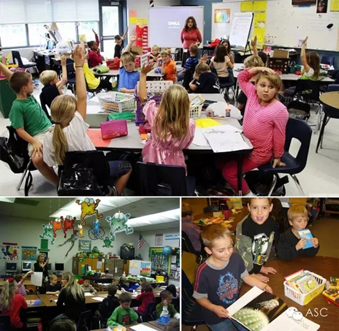

互惠动态
|
|
中国应试教育vs西方自由教育
提示：点击上方"ASC"↑免费订阅本刊
“教育就像是一个围城，里面的想出去，外面的想进来。两位移民父母下了很大决心，将孩子带回中国接受基础教育，但国内的基础教育让他们又爱又恨。” ——《中国新闻周刊》
给孩子怎样一个童年，是如今许多父母关注的话题。给孩子怎样的教育，又是一个令人头疼的问题。《中国新闻周刊》记者庞清辉把镜头给您带向移民加拿大的老余（儿子Edmond）和移民美国的陆太太（女儿媛媛）。
1移民国外的困扰
★ 这个一年级才开始教学生26个字母的学校让已经不再看图画书而改成以字为主的媛媛觉得：“这个学校怎么这么没意思？”
★ 美国小学里教的数学加法进位“乱七八糟”，相对于幼儿园就已经可以一分钟做一百个1位数加减法的媛媛，让陆太太觉得：“美国的老师真的不会教数学。”
★ 由于情绪低落，上课坐不住，而被老师批，大大伤了媛媛的自尊心，而当陆太太去找校方，校长回答说：那是你的错，你为什么要教她那么多？
★ 对于媛媛高于教学大纲标准的学习能力，陆太太要求给孩子跳级，校方表示不同意，称：我们不提倡孩子在小时候学那么多东西。
★ 国内的小学老师会规范小学生握笔、坐姿，但美国老师明确告诉陆太太：我们不管这个，小孩自由就好。但在陆太太看来，这造成了很多美国孩子的字“难看得要死”。
★ 老余也认为：“我们的孩子要有中国根。”“总不能一个种族最重要的东西没有了，掏空了，只剩一张华人的面孔。”（Edmond已经四岁了，不会讲中文，分不清中国的亲戚关系）

2带回国后的困惑
★ 在加拿大，小孩子上课不用规规矩矩地坐着，Edmond也没见过一排排桌椅的教室。上课第一天，因为完全听不懂老师说的中文，Edmond哭个不停。
★ 繁重的学习任务让老余觉得：“孩子被禁锢在作业本上，那么浩如烟海的有趣故事就没有了。”“我们全部的教学都是在扼杀孩子的兴趣，每一个孩子都是九死一生的。”“把活生生的孩子装到模式里面了，这很可怕。”
★ 老余还发现，在普通学校，成绩不好，就会受到歧视。
★ 国内的国际学校变成了贵族学校，但又与西方的贵族学校完全不同。“西方的贵族学校是培养贵族，要求严格，甚至苛刻；国内的贵族学校是伺候贵族，老师几乎不敢管孩子。”
★ 气质：Edmond以前不小心碰到谁都会说“对不起”，现在经常想不起来说。Edmond四岁时回北京的第一天，还没有进家门，第一件事就是去捡门口的垃圾，但“现在再也不这样了”。
★ 陆太太也发现：媛媛开始变得叽叽喳喳，说话调门很高，一副要和人吵架的样子。原来打喷嚏一定是用胳膊挡住嘴巴——不能用手，会因为摸东西而造成细菌感染。但现在打喷嚏，媛媛不再这么做了。“请”“谢谢”也很少说，跟别人说话总是“给我拿这个”“给我拿那个”。走进电梯，也不再用“早”“你好”和邻居打招呼。
★ 因为被逼着读书、考试、升学，孩子的知识面会慢慢变狭窄。
"未来的很多孩子都会是没有国界的人，”陆太太说，“他们需要知道这个世界上有各种文化，各种模式，没有哪一种绝对的好。”
ASC视角：没有一种两全其美的教育，重要的是让孩子自己在快乐的成长中能够区分和识别，哪些是好的，哪些是不好的。那么，聪明的家长们，为何不选择一种互补的教育方式呢？既完全地接受中国的传统教育，又学习一些西方的礼仪文明，是否会减少许多像困扰着陆太太和老余的那些问题呢？
在孩子接受学校传统的中式教育的同时，通过邀请互惠生的方式，把西方文明渐渐引入孩子的生活，让孩子既不丢掉传统教育，又学习一些西方礼仪文化，带给孩子一个不一样的快乐童年！